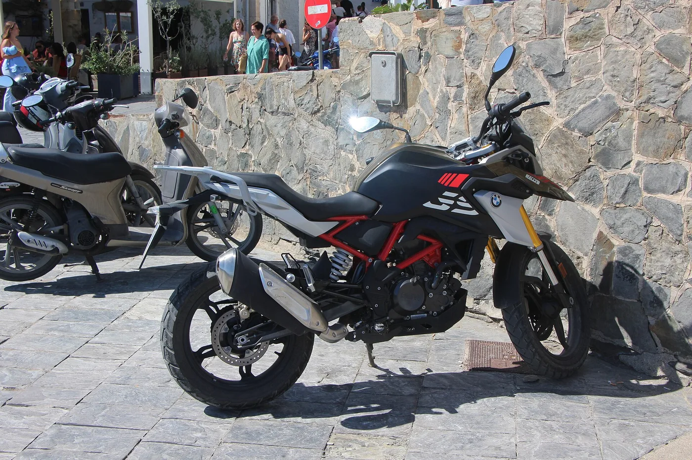
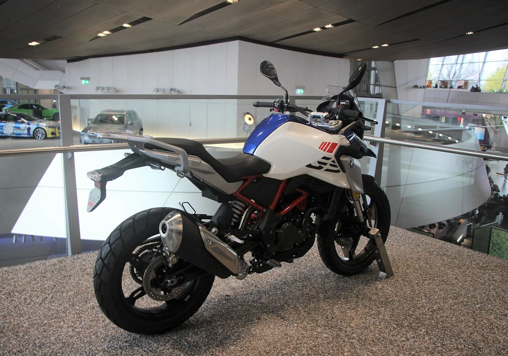
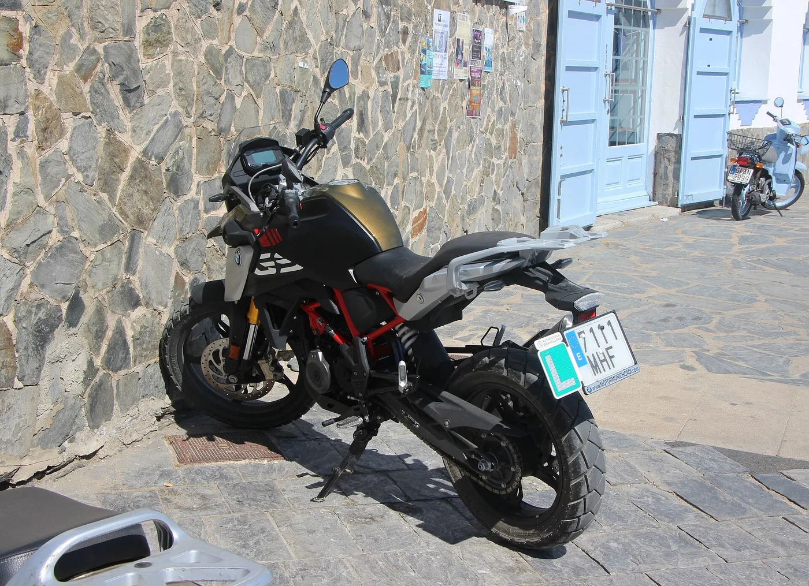

▲ 참고 이미지 — BMW G 310 GS. 신형 F 450 GS는 이 310 GS와 대형 GS 사이의 빈칸을 메운다 ⓒ Wikisympathisant, Wikimedia Commons (CC BY-SA 4.0)
BMW 모토라드가 뉴 F 450 GS의 국내 사전예약을 시작했습니다.
420cc 직렬 2기통, 48마력, 공차중량 178kg입니다. 가격은 1,250만원부터입니다.
GS는 BMW의 어드벤처 라인입니다. 그동안 310cc와 800cc대 사이가 비어 있었습니다. 이 차는 정확히 그 자리를 겨냥합니다.
1. GS 라인업에 있던 빈칸
BMW의 GS는 온로드와 오프로드를 함께 소화하는 어드벤처 계열입니다. 국내에서도 인지도가 높은 라인입니다.
문제는 구성의 간격이었습니다. 아래쪽은 G 310 GS, 위쪽은 F 800·900 GS급이었고, 그 사이가 사실상 비어 있었습니다.
310cc는 장거리와 2인 탑승에서 아쉽고, 800cc대는 무게와 가격, 그리고 면허 부담이 큽니다. 입문자가 두 번째 바이크를 고를 때 가장 자주 막히는 지점이 여기였습니다.
F 450 GS는 정확히 그 사이에 놓입니다. 배기량 420cc, 출력 48마력이라는 값은 그 자리에 맞춘 설정입니다.
2. 178kg — 이 차에서 가장 중요한 숫자
제원 중 실제 체감을 가장 크게 좌우하는 것은 출력이 아니라 무게입니다.
공차중량 178kg입니다. 어드벤처 카테고리에서 상당히 가벼운 편입니다. 대형 GS가 250kg 안팎인 것과 비교하면 차이가 분명합니다.
무게가 중요한 이유는 정차와 저속 구간입니다. 신호 대기에서 발을 딛고 차를 지탱하는 순간, 그리고 비포장에서 균형을 잃었을 때 다시 세우는 순간에 무게가 그대로 부담이 됩니다.
서스펜션 작동 범위는 전·후륜 각 180mm입니다. 어드벤처 성격에 맞는 수치이고, 노면이 거친 구간에서 여유를 만듭니다.
출력 48마력과 토크 4.4kg·m는 절대값으로 크지 않지만, 178kg이라는 무게와 묶어서 봐야 합니다. 출력 대 중량비로 보면 실용 영역에서 부족하지 않은 조합입니다.

▲ 참고 이미지 — BMW G 310 GS 측면. F 450 GS는 이보다 배기량과 서스펜션 여유를 키운 구성이다 ⓒ Wikisympathisant, Wikimedia Commons (CC BY-SA 4.0)
3. 익스클루시브와 GS 트로피, 100만원 차이
트림은 두 가지입니다.
| 트림 | 가격 | 추가 장비 |
|---|---|---|
| 익스클루시브 | 1,250만원 | 기본 구성 |
| GS 트로피 | 1,350만원 | 이지 라이드 클러치, 스포츠 서스펜션, 랠리 윈드실드, 알루미늄 엔진 가드 |
100만원 차이에 들어가는 항목들을 하나씩 보면 성격이 갈립니다.
- 이지 라이드 클러치 — 클러치 레버 조작력을 줄여준다. 정체 구간과 저속 오프로드에서 손 피로가 크게 줄어드는 항목이다.
- 스포츠 서스펜션 — 감쇠 세팅이 단단해진다. 거친 노면과 빠른 주행에 유리하고, 일상 승차감은 다소 딱딱해진다.
- 랠리 윈드실드 — 형상이 다른 스크린이다. 자세와 체형에 따라 방풍 효과 체감이 갈린다.
- 알루미늄 엔진 가드 — 비포장에서 엔진 하부를 보호한다. 오프로드를 실제로 탈 계획이라면 사실상 필수 항목이다.
포장도로 위주라면 익스클루시브, 비포장 비중이 있다면 GS 트로피가 합리적인 구분점입니다. 특히 엔진 가드는 나중에 따로 달면 부품값과 공임이 별도로 듭니다.

▲ 참고 이미지 — BMW G 310 GS 후측면. GS 계열 특유의 상단 캐리어와 좌석 구성이 보인다 ⓒ Wikisympathisant, Wikimedia Commons (CC BY-SA 4.0)
4. 이 가격대에서 기본으로 들어가는 것들
기본 장비 구성이 이 체급에서는 후한 편입니다.
- 6.5인치 TFT 디스플레이 — 스마트폰 연동과 내비 표시가 가능한 크기다
- USB-C 충전 — 라이딩 중 기기 충전
- 열선 그립 — 국내 겨울 라이딩에서 체감이 가장 큰 옵션 중 하나다
- 시프트 어시스턴트 프로 — 클러치 조작 없이 상·하향 변속(퀵시프터)
특히 열선 그립과 시프트 어시스턴트 프로가 기본이라는 점이 눈에 띕니다. 두 항목 모두 상위 모델에서는 옵션으로 붙는 경우가 많습니다.
라이딩 모드는 레인·로드·엔듀로·엔듀로 프로 4종입니다. 엔듀로 프로는 통상 트랙션 컨트롤과 ABS 개입을 크게 줄여 비포장에서 뒷바퀴 슬립을 허용하는 모드입니다.
즉 장비 구성만 보면 "입문용"이라기보다 "가볍고 저렴한 본격 어드벤처"에 가깝습니다.
5. 사전예약 조건과 일정
사전예약은 8월 18일 오후 2시부터 9월 7일까지입니다. 채널은 BMW 모토라드 샵 온라인입니다.
혜택은 두 가지입니다. 롤 백 40L가 증정되고, 금융상품을 이용하면 10만원 상당 모바일 주유권이 추가됩니다.
롤 백은 어드벤처 바이크에서 실사용 빈도가 높은 품목입니다. 40L면 1박 이상 투어링 짐을 담을 수 있는 용량입니다.
고객 인도는 9월 8일부터 순차적으로 진행됩니다. 사전예약 종료 다음 날부터 바로 출고가 시작되는 일정입니다.
수입 브랜드는 초기 물량이 한정되는 경우가 많습니다. 특히 특정 트림이나 색상에 수요가 몰리면 대기가 길어집니다.

▲ 참고 이미지 — BMW G 310 GS 후면. F 450 GS 고객 인도는 9월 8일부터 순차 진행된다 ⓒ Wikisympathisant, Wikimedia Commons (CC BY-SA 4.0)
6. 정리
BMW 뉴 F 450 GS가 국내 사전예약에 들어갔습니다. 420cc 직렬 2기통 48마력, 최대토크 4.4kg·m, 공차중량 178kg이고 전·후륜 서스펜션 작동 범위는 각 180mm입니다.
가격은 익스클루시브 1,250만원, GS 트로피 1,350만원입니다. 100만원 차이로 이지 라이드 클러치, 스포츠 서스펜션, 랠리 윈드실드, 알루미늄 엔진 가드가 추가됩니다.
6.5인치 TFT, USB-C, 열선 그립, 시프트 어시스턴트 프로가 기본이고 라이딩 모드는 4종입니다. 사전예약은 9월 7일까지, 인도는 9월 8일부터입니다.